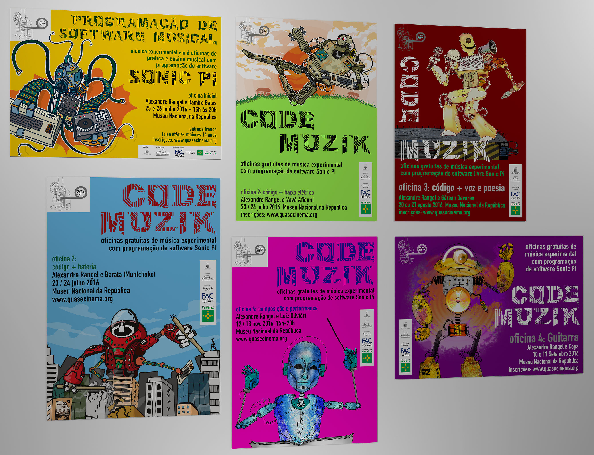

CODE MUZIK : Oficinas de Sonic Pi
CODE MUZIK : Sonic Pi workshops
Oficinas de criação musical com programação de software livre Sonic Pi.
Music creation with Sonic Pi workshops.

Oficinas CODE MUZIK
Matéria Rede Globo, Julho - 2016Museu Nacional do Complexo Nacional da República DF
Apoio: FAC - Governo de Brasília
JM Tecnologia em Eventos
CODE MUZIK workshops
Globo TV feature, July 2016National Museum at the National Republic Complex, Brasília DF
Support: FAC — Government of Brasília
JM Event Technology
Oficina CODE MUZIK Campus Party
Matéria Rede GloboCODE MUZIK Campus Party workshop
Globo Network featureCODE MUZIK Oficina 1
CODE MUZIK workshop 1
CODE MUZIK Oficina 2
Baixo, efeitos ao vivo com Sonic Picom Alexandre Rangel e Vavá Afiouni instagram.com/vava.afiouni
tiktok.com/@vavaafiouni
CODE MUZIK workshop 2
Bass and live effects with Sonic Piwith Alexandre Rangel and Vavá Afiouni instagram.com/vava.afiouni
tiktok.com/@vavaafiouni
CODE MUZIK Oficina 2 (vídeo VR)
CODE MUZIK workshop 2 (VR video)
CODE MUZIK Oficina 3
Programando voz e poesia.Alexandre Rangel + Gérson Deveras
instagram.com/gersondeveras
CODE MUZIK workshop 3
Live coding voice and poetry.Alexandre Rangel + Gérson Deveras
instagram.com/gersondeveras
Oficina CODE MUZIK 4 (VR video)
Guitarra, efeitos ao vivo com Sonic Picom Alexandre Rangel e Cepa
instagram.com/cepa
CODE MUZIK workshop 4 (VR video)
Guitarra, efeitos ao vivo com Sonic Picom Alexandre Rangel e Cepa
instagram.com/cepa